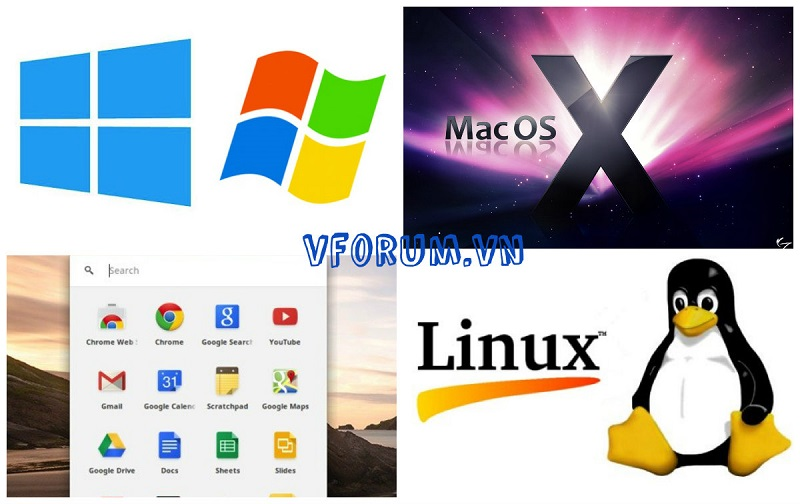

Hướng dẫn cách chọn mua laptop tốt nhất chi tiết từ a-z
Hướng dẫn cách chọn mua laptop tốt nhất chi tiết từ a-z mua laptop cũ và laptop mới đúng theo nhu cầu sử dụng cấu hình Mỏng, nhẹ, dễ mang theo và có khả năng xử lý công việc không thua gì máy tính để bàn, đó chính là laptop. Một công cụ hỗ trợ đắc lực cho bạn dù trong công việc hay chơi game, dù bạn đang ở nhà hay khi đi ra phố. Trong khi điện thoại và máy tính bảng đang ngày một phổ biến hơn thì với rất nhiều người dùng, việc họ nhập văn bản, xem video hay chơi game bằng laptop vẫn cho trải nghiệm tốt hơn cả. Vậy, bạn nên chọn cho mình loại laptop nào?Laptop hiện nay rất đa dạng về chủng loại, kích thước, chức năng và cả giá thành. Chính vì vậy, trước khi mua laptop bạn cần xác định rõ những gì mình cần. Dưới đây sẽ là 8 tiêu chí lựa chọn khi mua sắm laptop.
1. Chọn Hệ điều hành
Có 3 hệ điều hành hiện đang phổ biến nhất đó là: OS X (còn gọi là MacOS), Windows và ChromeOS. Chi tiết về các hệ điều hành:
ChromeOS
Thường thấy trên những dòng laptop giá rẻ, trọng lượng nhẹ như laptop 11,6 inch Acer C720 và HP Chromebook 14. ChromeOs của google là hệ điều hành nhẹ nhất nhưng cũng được xem là khá an toàn của Google. Giao diện người dùng của nó khá giống Windows với một menu ứng dụng, một màn hìnhchính và khả năng mở ra nhiều cửa sổ. Các cửa sổ này thường là đường dẫn tới trình duyệt Chrome và hầu hết ứng dụng là công cụ cho trang web. Vì hệ điều hành này chủ yếu là một trình duyệt nên ChromeOS sẽ khó bị mã độc và vi-rút tấn công. Điểm trừ của hệ điều hành là các ứng dụng offline đôi khi hoạt động không ổn định. Tuy nhiên, nếu bạn cần một thiết bị chủ yếu để lướt web, xem video, kiểm tra email, lên mạng xã hội hay chat trực tuyến thì Chromebook là lựa chọn hợp lí với giá thành rẻ, dễ mang theo và thời lượng pin sử dụng lâu.
Windows 8.1
Laptop sử dụng Windows đang chiếm đa số trên thị trường hiện nay vì giá tương đối rẻ so với hệ điều hành OS X của máy Mac ( có giá từ 400 đô trở lên) và hoạt động ổn định hơn so với ChromeOS cũng như cung cấp nhiều mẫu mã sản phẩm cho người dung. Không như Apple, Microsoft và đối tác còn cho phép người dùng mua laptop với màn hình cảm ứng và các thiết kế có thể chuyển đổi từ laptop sang máy tính bảng. Nếu bạn đang sử dụng hệ điều hành Windows nhưng chưa dùnng thử Windows 8.1 thì có thể bạn sẽ không khỏi bỡ ngỡ với hệ điều hành này. Windows 8.1 đã được thay thế menu Start với một màn hình Start cơ bản hiển thị một loạt các ứng dụng có thể cảm. Tuy nhiên , Windows 8.1 vẫn có một chế độ desktop để chạy tất cả các ứng dụng hiện tại của bạn và bạn có thể khởi động trực tiếp vào nó . Thật ra hệ điều hành này cũng không quá khó, với một số tiện ích và các thiết lập tinh chỉnh bạn sẽ có thể thêm một Menu Start và làm cho giao diện nhìn gần giống Windows 7. Laptop Windows còn được cung cấp các tính năng dành cho doanh nhân và một vài tính năng đặc biệt khác
Apple OS X
Dòng MacBook Air và MacBook Pro của Apple là những sản phẩm chính sử dụng hệ điều hành OS X. Trong thực tế, một số khách hàng sau khi dùng OS X còn thấy nó dễ sử dụng hơn Windows 8.1. Ngoài ra, dòng laptop sử dụng OS X như MacBook còn cung cấp các tính năng giống iOS như Launch Pad cho các ứng dụng, cảm ứng đa điểm và khả năng nhận cuộc gọi từ iPhone. Ngoài ra, dòng Macbook Air và MacBook Pro còn hơn hẳn các máy Windows khi nói đến thiết kế và touchpad . Trong khi các laptop Windows cung cấp nhiều lựa chọn phần mềm thì Apple làm cho nó dễ dàng hơn để tìm và cài đặt với Mac App Store. Tuy nhiên, laptop của Apple có giá khá đắt với các mẫu máy có giá từ 899 đô.
2. Lựa chọn kích thước phù hợp
Khi quyết định mua laptop, bạn cần phải xác định rõ bản thân cần loại máy to nhỏ như thế nào để sử dụng. Máy tính xách tay thường được phân loại theo kích thước hiển thị của chúng: Màn hình từ 11-12 inch: Là những chiếc laptop mỏng, nhẹ nhất, có màn hình 11-12 inch và thường nặng 1-1,5kg. Tuy nhiên , ở kích thước này, màn hình và bàn phím sẽ là quá nhỏ và chật với nhiều người dùng.
Màn hình từ 13-14 inch: Cung cấp sự cân bằng tốt nhất giữa tính di động và khả năng sử dụng . Máy tính xách tay với màn hình 13 hoặc 14 - inch thường nặng từ 2 đến 2,5 kg và cung cấp bàn phím rộng rãi vừa với màn hình. Nếu bạn sẵn sàng chi nhiều tiền hơn, bạn sẽ có được những hệ thống cực kỳ gọn nhẹ gồm Dell XPS 13 chỉ nặng hơn 1kg và laptop 14 - inch Lenovo ThinkPad X1 Carbon chỉ nặng hơn 1,5kg
Màn hình 15 inch : là kích thước phổ biến nhất hiện nay của máy tính xách tay, và vì chúng có màn hình 15 - inch nên thường khá cồng kềnh, nặng nề ở mức 3-3,5kg. Nếu bạn không có kế hoạch mang máy tính xách tay đi nhiều nơi và thường đặt lên người để sử dụng thì một hệ thống 15 - inch là một lựa chọn tốt dành cho bạn. Một số mẫu laptop 15 - inch cũng có ổ đĩa DVD, nhưng bạn có thể giảm trọng lượng đáng kể cho máy nếu bỏ qua phần này
Màn hình 17-18 inch: Nếu máy tính xách tay của bạn chỉ đặt trên bàn cả ngày thì một hệ thống 17 hoặc 18 - inch sẽ có thể cung cấp cho bạn vi xử lý đầy mạnh mẽ dù cho bạn dùng để chơi game hay làm việc.
3. Kiểm tra bàn phím và touchpad
Thông số kỹ thuật ấn tượng không có nghĩa là mọi thứ của máy đều hoàn hảo. Vì vậy, bạn cần kiểm tra kĩ độ nhạy, độ chính xác và khả năng lướt nhanh giữa các nút của bàn phím. Ngoài ra, bạn cũng nên xem touchpad có sử dụng được không, khi tiến hành thao tác chọn văn bản có bị ngắt quãng hay không.
Thêm vào đó, các nút bấm trên trackpad cũng phải có độ nhạy nhất định. Nếu bạn đang tìm mua một máy tính xách tay Windows 8, hãy kiểm tra touchpad để chắc chắn rằng những thao tác nhấn-giữ không vô tình kích hoạt. Nhìn chung , Apple và Lenovo là những nhà cung cấp bàn phím, touchpad thuộc hàng tốt nhất . Bên cạnh đó, Dell và HP cũng rất đáng tin cậy trong lĩnh vực này.
4. Cấu hình của máy
Đây sẽ là phần quan trọng nhất trong việc chọn mua 1 chiếc laptop phù hợp với nhu cầu sử dụng của từng người. Các thông số kỹ thuật như CPU , ổ cứng , RAM , card đồ họa có thể gây nhầm lẫn cho không ít người mua nếu họ không tìm hiểu kĩ hoặc có ít hiểu biết về laptop. Do đó, những gì bạncần làm là xác định mục đích sử dụng khi mua máy. Các tác vụ chuyên sâu hơn như chơi game 3D và chỉnh sửa video HD sẽ đòi hỏi các cấu hình đắt tiền hơn. Dưới đây là những thành phần chính trong cấu hình laptop.
CPU: Các máy tính xách tay trên thị trường hiện đa số đang sử dụng chip AMD E Series hoặc Intel CPU Pentium, bộ phận sẽ xử lý các tác vụ từ nhỏ đến lớn và các tác vụ như lướt web. Bộ vi xử lý Intel Atom sẽ cho hiệu suất thấp nhất , nhưng cung cấp tuổi thọ pin dài Các tablet / laptop thường sử dụng chip xử lý Core M của Intel , chúng nhanh hơn so với Atom nhưng không nhanh như Core Series của công ty ( Core i3 , i5 và i7 ) . Nếu bạn có ý định mua một laptop có chip thuộc dòng i dù là i3 , i5 hay i7 thì hãy cố gắng mua thế hệ mới nhất của chúng là Intel 5th Generation ( aka Broadwell, Illinois ) mới ra mắt đầu năm nay. Nếu bạn quyết định bỏ ra hơn 500 đô thì ít nhất hãy mua laptop Core i5 vì nó khả năng tăng tốc độ xử lý rất nhiều cho laptop . Người sử dụng cần cấu hình cao và các game thủ nên chọn hệ thống Core i7.
RAM: Khi nói đến bộ nhớ , hoặc RAM , thậm chí cả máy tính xách tay giá rẻ nhất cũng có 4GB ram nên lời khuyên là bạn đừng mua các máy coq ram thấp hơn. Nếu bạn có thể có được một hệ thống với 6 hoặc 8 GB , bạn sẽ được chuẩn bị tốt hơn cho các ứng dụng cao cấp và khả năng chạy đa nhiệm của máy. Các game thủ và người sử dụng cần cấu hình cao nên tìm 16GB RAM.
Ổ cứng: Đối với hầu hết người dùng, một ổ đĩa nhanh là quan trọng hơn một ổ đĩa có dung lượng lớn. Nếu bạn có một sự lựa chọn, hãy chọn một ổ cứng 7,200-rpm thay vì 5.400-rpm. Thậm chí nếu bạn có một số bộ phim và các trò chơi trên ổ cứng của bạn, một ổ cứng 320GB sẽ là đầy đủ, nhưng dung lượng 500GB hoặc 750GB ổ đĩa thường không phải tốn thêm quá nhiều.
Ổ cứng SSD: Các ổ đĩa này có giá trị hơn một chút so với ổ đĩa cứng truyền thống và đi kèm với ít công suất (thường là 128 đến 256GB), nhưng chúng cải thiện hiệu suất đáng kể. Bạn sẽ tận hưởng thời gian khởi động nhanh hơn, thời gian resume nhanh hơn, và thời gian mở ứng dụng nhanh hơn. Thêm vào đó, vì ổ SSD không có bộ phận chuyển động như ổ cứng cơ học, việc bị thất bại là điều ít khi xảy ra
Màn hình: Càng nhiều điểm ảnh mà bạn có, các nội dung dược hiển thị trên màn hình sẽ càng chi tiết hơn. Hầu hết các máy tính xách tay đều có độ phân giải thấp nhất là 1366 x 768-pixel. Tuy nhiên, nếu bạn có các tùy chọn, nên chọn một máy tính xách tay với một điểm ảnh cao 1600 x 900 hoặc 1920 x 1080. Bạn sẽ thấy thêm các trang web yêu thích của bạn, đa nhiệm tốt hơn, và có một trải nghiệm xem phim tốt hơn. Full tấm HD (1920 x 1080) có giá khoảng hơn 150 đô hơn so với laptop thường Một số máy tính xách tay đắt tiền, thậm chí, với màn hình là 2560 x 1600, 3200 x 1800 hoặc thậm chí 3840 x 2160. Mặc dù hầu hết các phim không có sẵn ở độ phân giải cao nhưng hình ảnh sẽ rất sắc nét. Màn hình cảm ứng: Windows 8 sở hữu khả năng chạm vào màn hình rất độc đáo, nhưng nếu máy tính xách tay của bạn không phải là một đứa con lai với một màn hình uốn cong hoặc xoay, thì bạn có thể cũng không cần đến nó. Mặc dù bạn có thể có được một hệ thống màn hình cảm ứng cho dưới 500 đô nhưng sự khác biệt về giá giữa các hệ thống cấu hình tương tự có và không có cảm ứng là 100 đến 150 đô.
Chip đồ họa: Đối với hầu hết các phần, một chip đồ họa tích hợp (một trong những bộ nhớ chia sẻ) sẽ đảm nhiệm các tác vụ cơ bản gồm lướt web, xem video, và thậm chí chơi một số trò chơi nặng. Tuy nhiên, một bộ xử lý đồ họa rời từ AMD hoặc Nvidia (mà đã dành bộ nhớ cho video) sẽ cung cấp hiệu suất tốt hơn khi nói đến các trò chơi đòi hỏi cấu hình mạnh nhất. Thêm vào đó, một GPU tốt có thể tăng tốc phát lại video trên các trang web như Hulu, cũng như tăng tốc độ chỉnh sửa video.
Như với các CPU có cả chip đồ họa cao cấp và cấp thấp . Nvidia duy trì một danh sách các chip đồ họa của hãng từ thấp đến cao cấp cũng như AMD. Nói chung, các máy tính xách tay chơi game sẽ cần có GPU tốt nhất Ổ đĩa DVD/Blu - ray: Máy tính xách tay ngày càng ít những máy đi kèm với ổ đĩa quang . Đó là bởi vì bạn có thể tải về phần mềm hoặc video từ trang web. Trừ khi bạn ghi đĩa hoặc muốn xem phim Blu - ray , bạn không cần một trong những ổ đĩa và có thể tiết kiệm được một nửa trọng lượng bằng cách lược bỏ chúng
5. Quyết định xem bạn muốn một laptop 2 -in - 1 hay laptop truyền thống
Cùng với sự ra mắt của Windows 8 , chúng ta đã nhìn thấy một số thiết kế lai " 2 trong 1 " khi biến laptop thành máy tính bảng. Có thể kể đến Lenovo Yoga Pro 3 , máy có một màn hình có thể gập ra phía sau 360 độ để biến thành một chiếc tablet. Bên cạnh đó, thiết kế bàn phím rời như ASUS Transformer Book Chi cũng lá2 một nét độc đáo riêng, cả hai thậm chí còn mỏng hơn MacBook Air.
Nếu bạn thích ý tưởng thỉnh thoảng sử dụng máy tính xách tay trong chế độ máy tính bảng, máy có thể chuyển đổi như Yoga là một sự lựa chọn tốt nhất. Nhưng nếu bạn muốn sự linh hoạt trong việc sử dụng như một máy tính bảng thực thụ thì laptop có bàn phím tháo rời là hợp lý nhất.
6. Đừng bỏ qua dung lượng pin
Pin là vấn đề rất được quan tâm trong thời đại công nghệ. Không ai muốn bị xích vào một ổ cắm điện, thậm chí nếu có một ổ cắm trong tầm tay. Vì vậy, nếu bạn mua một máy tính xách tay 15-inch, bạn nên tìm máy có thể hoạt động ít nhất trong 4 giờ. Những người phải thường xuyên làm việc với máy nhiều thì nên sắm laptop hoạt động trong 6 - 7 tiếng là lý tưởng.
Nếu được lựa chọn, hãy trả thêm tiền cho một một viên pin mở rộng và bạn sẽ không phải hối tiếc. Hãy nhớ rằng một số máy tính xách tay (như MacBook Air) với thiết kế kín pin không thể thay pin sẽ gây khá nhiều bất lợi cho bạn. Để xác định thời lượng chính xác của pin đừng chỉ tin tưởng vào quảng cáo của nhà sản xuất. Thay vào đó, hãy đọc bài đánh giá của bên thứ ba từ các nguồn khách quan, chẳng hạn như vforum.vn. Tuổi thọ pin thực tế của bạn sẽ thay đổi tùy thuộc vào độ sáng của màn hình và những gì bạn làm trên laptop.
7. Xác định khả năng chi tiêu
Những ngày này, bạn có thể mua một chiếc laptop sử dụng được chỉ với mức giá dưới 500 đô, nhưng nếu bạn có hầu bao rủng rỉnh hơn, bạn sẽ có được một hệ thống với chất lượng xây dựng tốt hơn, hiệu suất mạnh mẽ và một màn hình hiển thị tốt hơn. Dưới đây là từng phân khúc máy xếp theo giá tiền
- 3 triệu - 7 triệu: Đây là các máy tính xách tay có giá rẻ nhất và thường là Chromebook chạy hệ điều hành ChromeOS của Google hoặc các máy Windows cấu hình thấp. Tuy nhiên, laptop 11 hoặc 12 - inch lại có ưu điểm trọng lượng nhẹ và thời gian sử dụng lâu đến 8 tiếng cho một lần sạc đầy.
- 7 triệu - 12 triệu: Với số tiền dưới 600 đô, bạn hoàn toàn có thể có một chiếc máy tính xách tay với vi xử lý Intel Core i5 hoặc AMD A8 CPU, Ram từ 4 đến 8GB và ổ cứng. Tuy nhiên, với mức giá này, hầu hết các máy tính xách tay có khung nhựa rẻ tiền, màn hình hiển thị không sắc nét và pin yếu.
- 12 triệu - 16 triệu: Với số tiền trên 600 đô, bạn sẽ bắt đầu nhìn thấy những thiết kế cao cấp hơn, chẳng hạn như laptop có bộ khung bằng kim loại. Các nhà sản xuất cũng sẽ bắt đầu để thêm vào các tính năng khác để thu lợi nhuận nhiều hơn. Một ví dụ đó là khi hai laptop trùng nhau về phiên bản thì chúng sẽ có những khác biệt nhất định ở cấu hình.
- Trên 16 triệu: Ở mức giá này, laptop sẽ có chip xử lý mạnh mẽ hơn, màn hình độ phân giải cao hơn, card đồ họa xịn cũng như có thể tháo rời. Những laptop nhẹ và siêu di động sẽ có giá khá đắt đại diện là MacBook Air 13-inch và Dell XPS 13tend có giá hơn 1.000 đô.
8. Chọn thương hiệu
Máy tính xách tay của bạn sẽ chỉ tốt nếu như công ty sản xuất là một công ty có uy tín. Thêm vào đó, dịch vụ hỗ trợ kỹ thuật chính xác và kịp thời là tối quan trọng. Năm vừa qua Apple đứng ở vị trí đầu tiên ở lĩnh vực này, tiếp theo là HP và Samsung.
Tuy nhiên, hỗ trợ chỉ là một phần của thương hiệu laptop để xứng đáng với số tiền mà bạn bỏ ra. Bạn cũng phải xem xét cách mà thương hiệu đó phát triển về thiết kế , giá trị và sự lựa chọn của người dùng qua các bài đánh giá khách quan, cùng những tiêu chuẩn khác. Trong bảng xếp hạng thương hiệu năm 2015 Apple đứng thứ nhất, tiếp theo là Dell và HP.